日本フィジカルAI新聞
https://physicalainews.jp
フィジカルAI(ロボット基盤モデル)の世界の動きを日本語で追う専門紙。ニュース・企業DB・Robot DB・論文・入札公募・イベント。
フィード
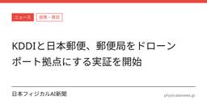
KDDIと日本郵便、郵便局をドローンポート拠点にする実証を開始
日本フィジカルAI新聞
newsroom.kddi.comは2026年9月28日、「KDDIと日本郵便、郵便局をドローンポート拠点にする実証を開始」と報じた。
15時間前
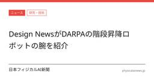
Design News、DARPAの階段昇降ロボットに腕を付与した動画を紹介
日本フィジカルAI新聞
Design Newsは2012年12月11日付で、「Video: DARPA Stair-Climbing Robot Gets Arms」と題する動画記事を掲載した。記事はDARPAの階段昇降ロボットに腕を備えた様子を扱うもので、ロボットの外観変化が主題である。提示された情報では、技術仕様や開発主体の詳細は確認できない。
15時間前
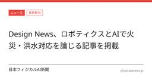
Design News、ロボティクスとAIで火災・洪水対応を論じる記事を掲載
日本フィジカルAI新聞
Design Newsが、ロボティクス、AI、IoTを火災や洪水への対応に結びつける記事を掲載した。主ソースはインタビュー／論説型で、報じられた内容そのものが中核である。詳細は原典を参照されたい。
15時間前
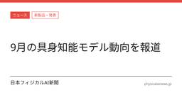
松延動力、智元機器人、宇樹科技が相次ぎ具身智能モデルを公表
日本フィジカルAI新聞
9月上旬、松延動力、智元機器人、宇樹科技が具身智能モデルに関する発表を行ったとleaderobot.comが伝えた。
17時間前
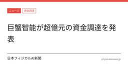
巨蟹智能、超億元を調達 華泰紫金が主導、科沃スや自変量も出資
日本フィジカルAI新聞
無錫巨蟹智能驱動科技有限公司が新たな資金調達を完了したと、leaderobot.comが2026-10-03に報じた。本輪は華泰紫金が主導し、德昌電機、九号私募、自変量が続き、既存株主の南京市創新投資集団と科沃斯も追加出資した。調達資金は新製品開発、設備購入、産能拡張に充てるとしている。
19時間前
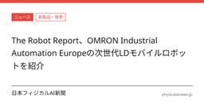
The Robot Report、OMRON Industrial Automation Europeの次世代LDモバイルロボットを紹介
日本フィジカルAI新聞
The Robot Reportが2026年10月2日、OMRON Industrial Automation Europeの次世代LDモバイルロボットを扱うポッドキャスト回を公開した。主題は同社の製品戦略や工場内物流の自動化だが、発言内容の詳細は原典側で確認する必要がある。今回は報道の事実を押さえつつ、周辺のロボット動向との関係をどうみるかが焦点になる。
1日前
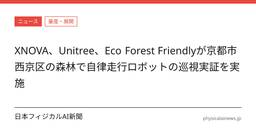
XNOVA、Unitree、Eco Forest Friendlyが京都市西京区の森林で自律走行ロボットの巡視実証を実施
日本フィジカルAI新聞
XNOVA、Unitree Robotics、Eco Forest Friendlyの3社が、京都市西京区の森林で自律走行ロボットによる森林巡視の実証を行った。主ソースは、森林環境での巡視を前提にした実証である点を示しているが、規模や期間、導入台数の記載は見当たらない。既存のロボットを単に屋外へ持ち出す段階を超え、森林という不整地での走行と巡視運用を確認する位置づけとみられる。
1日前
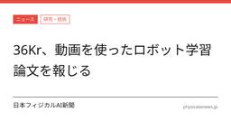
36Kr、動画を使ったロボット学習論文を報じる
日本フィジカルAI新聞
36Krが、動画を用いたロボット学習に関する論文を報じた。主題は「Robot Work Learning via Video: 120B Tokens Human Action Pre-Training Achieves Power-Law Error Reduction」である。詳細は原典を参照されたい。
1日前
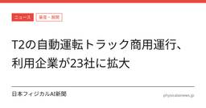
T2の自動運転トラック商用運行、利用企業が23社に拡大
日本フィジカルAI新聞
自動運転トラック開発のT2が行う関東―関西間の商用運行に、大手物流5社が参画した。利用企業は1年で4倍超の23社に広がった。
1日前
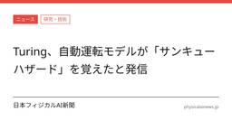
Turing、自動運転モデルが「サンキューハザード」を覚えたと発信
日本フィジカルAI新聞
Turingが、自動運転モデルが「サンキューハザード」を出せるようになったとXで発信した。同社取締役COOも同様の趣旨を投稿し、実証車両の走行動画を公開した。報道は、走行制御に加えて日本の運転慣行に近い振る舞いまでモデルが学習したとみる文脈で伝えた。
1日前
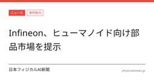
Infineon、ヒューマノイド向け半導体需要を説明
日本フィジカルAI新聞
ITmediaは、Infineon Technologiesがヒューマノイド向け市場について説明したと報じた。記事では、同社の関係者が講演で関連する市場規模や部品構成に触れた。
1日前
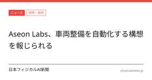
Aseon Labs、車両整備を自動化する構想を報じられる
日本フィジカルAI新聞
Aseon Labsが、ロボタクシーの整備工程を自動運転に近い形で自律化する構想を巡って報じられた。主題は走行中の自動運転ではなく、充電・清掃・点検を含む運用後工程にある。詳細は原典を参照されたい。
1日前
Forbes、ヒューマノイドの安全認証を巡る論点を報道
日本フィジカルAI新聞
Forbesが、ヒューマノイドロボットの安全性と認証の難しさを巡る論点を報じた。安全柵の外で動く段階に入った一方、実運用での「実際の安全」をどう示すかは別問題だとみられる。詳細は原典を参照されたい。
1日前

Vector、PEM Motion、FMC³ Roboticsが共同基盤の構築で合意
日本フィジカルAI新聞
ロボティクス・アンド・オートメーション・ニュースは、Vector Informatik、PEM Motion、FMC³ Roboticsが産業向けのembodied AIに関する標準化されたデータ基盤を共同開発するため、覚書に署名したと報じた。
1日前
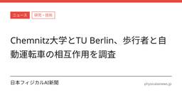
Chemnitz大学とTU Berlin、歩行者と自動運転車の相互作用を調査
日本フィジカルAI新聞
Chemnitz工科大学とTechnische Universität Berlinの研究者が、歩行者が自動運転車にどう反応するかを調べた。2026年7月と8月に、Chemnitzのキャンパスで自動運転シャトルを使った研究を実施した。車両の自動運転、手動運転、遠隔操作の3モードと走行速度が、横断意図や安心感にどう影響するかが焦点である。
1日前
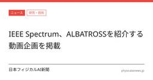
IEEE Spectrum、Albatrossの飛行・着水・自立・航行を紹介
日本フィジカルAI新聞
IEEE Spectrumは2026年10月2日付のVideo Fridayで、ALBATROSSというハイブリッド空中・海上ロボットを紹介した。空中から放出され、回転降下して水面に着水し、姿勢を立て直したうえで同じ硬翼を帆として使う設計だという。開発側は、飛行用・着水用・海上推進用の機構を分けず、物理構造そのものに役割を持たせる点を強調している。想定用途は、迅速な空中展開と、エネルギー効率の高い海上センシングの両立にあると説明されている。
1日前
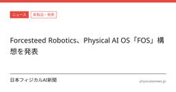
Forcesteed Robotics、Physical AI OS「FOS」構想を発表
日本フィジカルAI新聞
報道は2026年10月1日、「Forcesteed Robotics、Physical AI OS「FOS」構想を発表」と報じた。
1日前
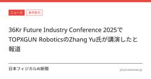
36Kr Future Industry Conference 2025でTOPXGUN RoboticsのZhang Yu氏が講演したと報道
日本フィジカルAI新聞
TOPXGUN RoboticsのZhang Yu CEOを取り上げた報道である。会議名は36Kr Future Industry Conference 2025で、媒体は36Kr系の記事として伝えている。原典はインタビュー/講演系であり、発言内容の再構成は避ける必要がある。
1日前
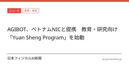
AGIBOT、ベトナムNICと提携 教育・研究向け「Yuan Sheng Program」を始動
日本フィジカルAI新聞
AGIBOTは10月2日、ベトナム・ハノイでVietnam National Innovation Center（NIC）などと共催した会議で、教育・研究向けの「Yuan Sheng Program」を始動した。会議ではRaaSモデルの導入も発表し、教育、研究、小売、文化観光、ホスピタリティ、製造向けの展開を掲げた。AGIBOTはベトナムでの市場拡大を位置づけつつ、現地パートナーECOLIVとの運用・保守体制の整備も進める構えだ。
2日前
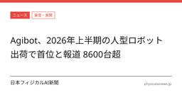
Agibot、2026年上半期の人型ロボット出荷で首位と報道 8600台超
日本フィジカルAI新聞
Agibotが2026年上半期に人型ロボットを8600台超出荷し、IDC集計では世界首位と報じられた。
2日前
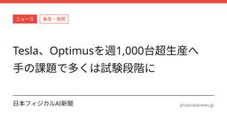
Tesla、Optimusを週1,000台超生産へ 手の課題で多くは試験段階に
日本フィジカルAI新聞
Teslaについて、週1,000台超のヒト型ロボット「Optimus」を生産するとThe Cool Downが報じた。
2日前
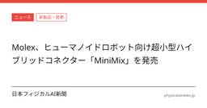
Molex、ヒューマノイドロボット向け超小型ハイブリッドコネクター「MiniMix」を発売
日本フィジカルAI新聞
Molexは、ヒューマノイドロボットと自律走行搬送ロボット（AMR）向けの超小型ハイブリッドコネクター「MiniMix」を発売した。電力と信号を一体化した構成で、15.0Aの電力供給と1Gbpsの1000BASE-T1に対応する。Molexは前提として、ロボット内部の配線・接続を小型化する用途を想定しているとみられる。
2日前
forbes.com、世界モデルとフィジカルAIの関係を論じる寄稿を掲載
日本フィジカルAI新聞
forbes.comが2026-10-02付で、世界モデルとフィジカルAIの関係を論じる寄稿を掲載した。主題は、LLMがあるなかでなぜ世界モデルが必要かという問いである。ただし、公開された抜粋だけでは論旨の全体像は限られるため、詳細は原典を参照する必要がある。
2日前
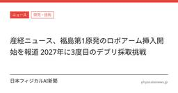
産経ニュース、福島第1原発のロボアーム挿入開始を報道 2027年に3度目のデブリ採取挑戦
日本フィジカルAI新聞
産経ニュースは、福島第1原発で原子炉格納容器へのロボアーム挿入が始まったと報じた。同報道では、2027年に3度目のデブリ採取を目指す計画が示された。詳細は原典を参照されたい。
2日前
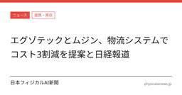
エグゾテックとムジン、物流システムでコスト3割減を提案と日経報道
日本フィジカルAI新聞
日本経済新聞は2026年10月1日、エグゾテックとムジンが物流システムでコスト3割減を提案したと報じた。詳細は原典を参照されたい。公開情報だけで見ると、両社の提案は倉庫自動化の中でも搬送・ピッキング周辺の省人化をどこまで詰めるかが焦点になる。
2日前
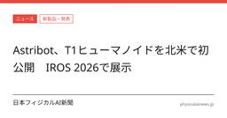
Astribot、T1ヒューマノイドを北米で初公開 IROS 2026で展示
日本フィジカルAI新聞
roboticsandautomationnews.comは2026年10月2日、「Astribot、T1ヒューマノイドを北米で初公開 IROS 2026で展示」と報じた。
2日前
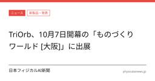
TriOrb、10月7日開幕の「ものづくり ワールド [大阪]」に出展
日本フィジカルAI新聞
prtimes.jpは2026年10月1日、「TriOrb、10月7日開幕の「ものづくり ワールド [大阪]」に出展」と報じた。
2日前

ダイナミックマッププラットフォーム、JUC 2026で講演
日本フィジカルAI新聞
ダイナミックマッププラットフォームは10月1日、9月17日に開かれたdSPACE Japan User Conference 2026で講演したと発表した。
2日前

米、ドローンやロボットに焦点の「自律型戦闘軍」創設を検討と報道
日本フィジカルAI新聞
産経ニュースは、米国が「自律型戦闘軍」の創設を検討していると報じた。焦点はドローンやロボットで、マスク氏らが将来の戦争を研究しているという。記事の詳細は原典を参照する必要がある。
2日前